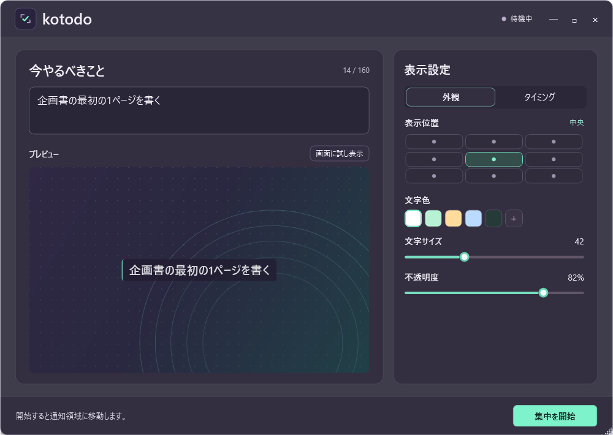

Windows · v1.0.0
kotodo
今やることを、
ひとこと画面に。
画面を切り替えた瞬間、書いておいた一行がそっと現れます。作業の手を止めずに、次にやることを思い出せます。
Windows 版をダウンロード無料 · kotodo.exe · .NET Framework 4.8

使い方
- 今やることを書く
kotodo.exe を起動し、「今やるべきこと」に作業を160文字以内で入力します。
- 見える場所を決める
「外観」で9か所から位置を選び、文字色や大きさ、不透明度を調整します。「画面に試し表示」で実際の見え方を確認できます。
- 集中を開始する
「タイミング」で、アプリ切り替え時・一定間隔・常時表示から選びます。「集中を開始」を押すと設定画面が閉じます。終了や設定の変更は通知領域の kotodo アイコンから。
タスクと設定の保存
入力した内容と設定はこの PC の %LOCALAPPDATA%\kotodo\settings.xml に保存します。FocusCue を使っていた場合は、初回起動時にその設定を引き継ぎます。
Quick start
Run kotodo.exe on Windows with .NET Framework 4.8. Enter one task, choose where and when it appears, then select “集中を開始” to start. Your reminder appears over other apps and lets clicks pass through. Open kotodo from the system tray to change settings or end the session.
GitHub release · v1.0.0 →